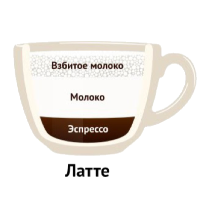

Латте
Ла́тте (итал. caffè latte — «кофе с молоком») — кофейный напиток родом из Италии, состоящий из молока (итал. latte) и кофе эспрессо. Латте варится на основе молока, образуя в чашке или бокале трёхслойную смесь из молока, эспрессо и пены.
Приготовление эспрессо
В Италии латте готовится в домашних условиях и обычно пьётся только до обеда. Для изготовления латте используется мока (Гейзерная кофеварка) и чашка подогретого молока. Чаще всего латте готовится из порции эспрессо, которая заливается как горячим, так и холодным вспененным молоком. Соотношение эспрессо, взбитого молока и молочной пены у такого напитка 1:2 или 3:1, что позволяет получить наилучшие вкусовые, ароматические и эстетические свойства напитка. Для придания дополнительных вкусовых ощущений, пенку латте часто посыпают добавками: корицей, шоколадом, или ореховой крошкой. Также применяют добавление сиропа амаретто: гурманы утверждают, что сочетание горьковатого вкуса кофе и ликера амаретто необычайно пикантно и не оставит кого-либо равнодушным.